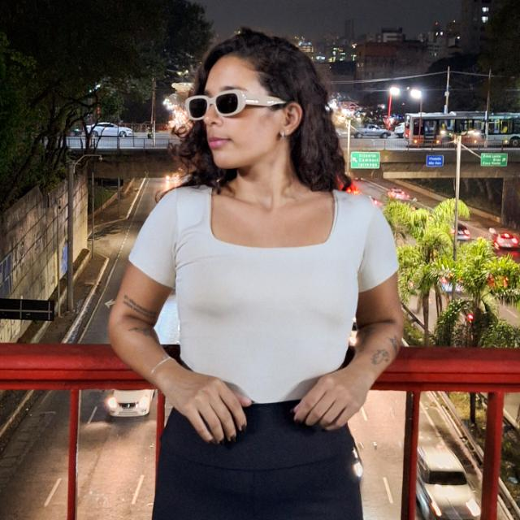
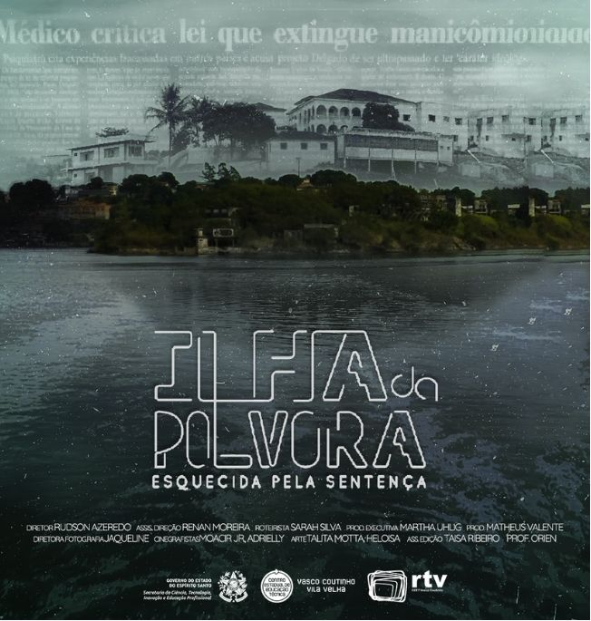

↓Oi! Eu sou a Heloisa.
Natural de Vila Velha e formada em Técnico em Rádio e TV. Tenho grande interesse pelas áreas de audiovisual e redes sociais, onde busco constantemente desenvolver minhas habilidades e contribuir com projetos criativos e inovadores.
Faço filmes de casamento, social media, artes e retratos — ideias em movimento, histórias em imagem.
Fale comigoFilmes e momentos que merecem ser revividos.
Peças gráficas, ideias e estudos visuais.
Pessoas, expressões e pequenos detalhes.
Vamos conversar?
Contato
Espero trabalhar em breve com você.
Me chama no WhatsApp ↗
03 · Conteúdo e narrativa
Social Media

Projeto em destaque · 2022
Ilha da Pólvora
Documentário realizado para o projeto final do curso técnico em Rádio e Televisão, no CEET Vasco Coutinho, em 2022.
Minha atuaçãoSocial media e auxiliar de edição.
Ver o projeto no Instagram ↗